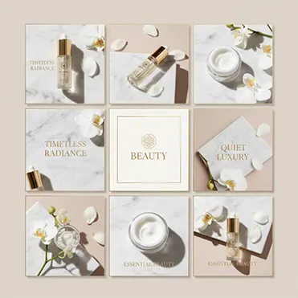
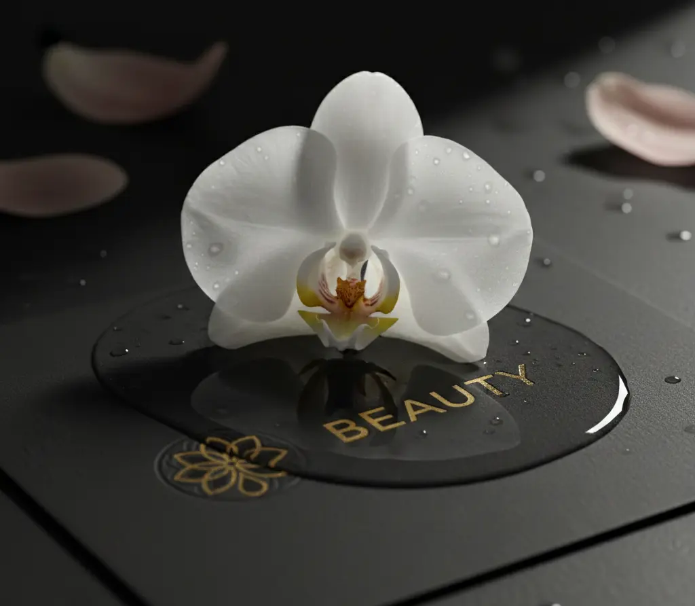

← Todos los proyectos
Identidad · Experiencia digital
Beauty Premium
Un universo sereno y sofisticado para acompañar la experiencia desde el descubrimiento hasta la compra.

- Áreas
- Identidad visual, dirección de arte, diseño web
- Sector
- Belleza y cuidado personal
- Enfoque
- Claridad editorial y experiencia de compra
La idea
Sofisticación sin distancia
La propuesta combina una base neutra, detalles cálidos y una composición editorial que deja respirar al producto. Cada decisión ayuda a ordenar una oferta amplia sin perder su carácter aspiracional.
El sistema está pensado para sostener campañas, categorías y contenido social con una voz visual consistente.


Siguiente caso